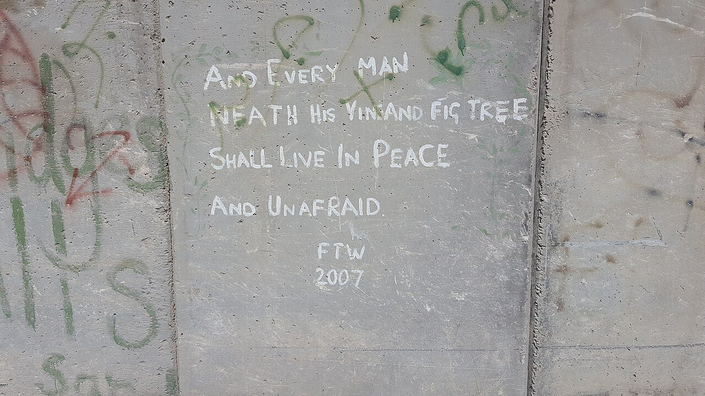
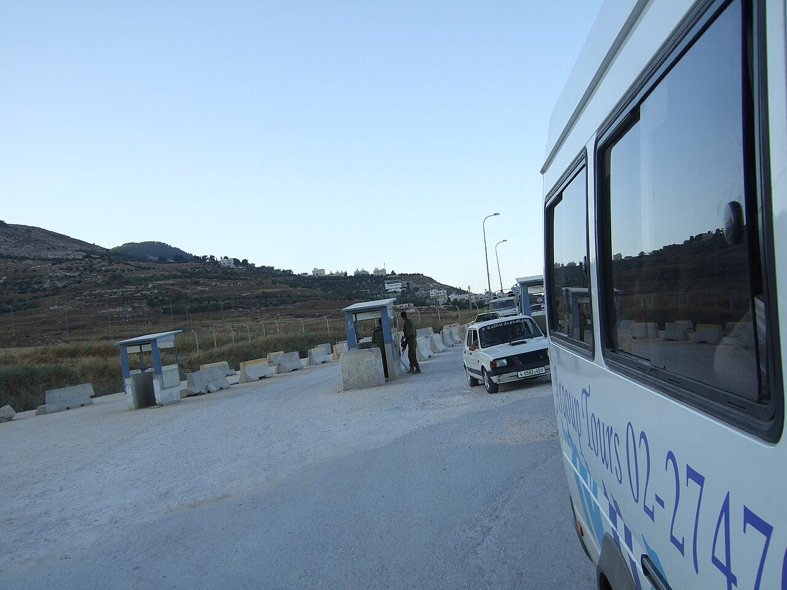
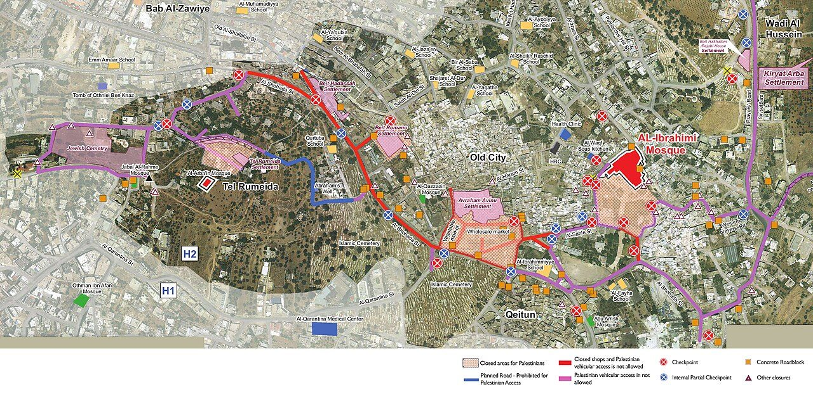
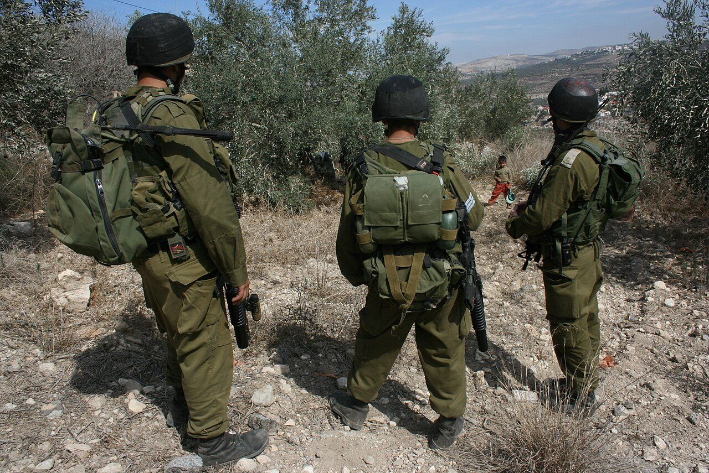
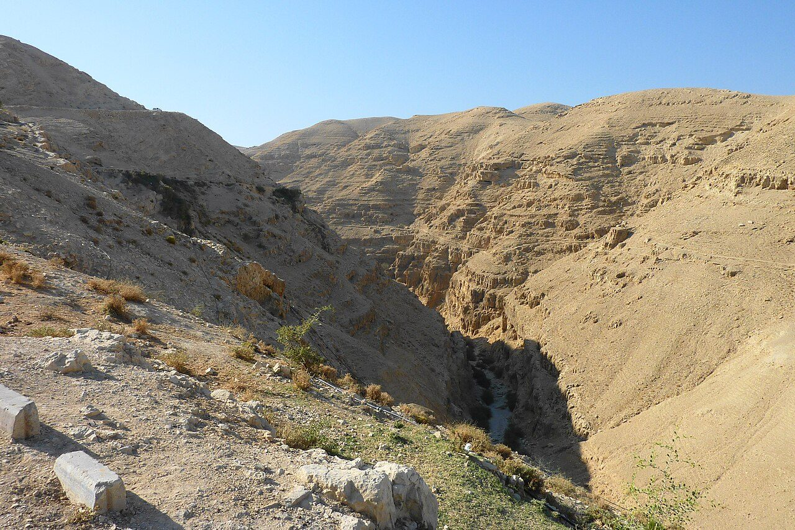

This page is a translation of the German original (as of 15 November 2026). Links lead to German pages unless marked otherwise.
The West Bank under three rulers
The West Bank (Arabic ad-Daffa al-Gharbiyya) covers about 5,655 km² west of the Jordan River, including East Jerusalem. Today around 3.3 million Palestinians live there, along with more than 700,000 Israeli settlers, whose presence is contested under international law. The territory has been under Israeli occupation since June 1967; in July 2024 the International Court of Justice (ICJ) found this continued presence to be unlawful under international law.
This page proceeds in six chapters: first the history of the territory since 1948, then the system of rule — two legal orders, settlements, the three Oslo areas —, then everyday life under this order, the military operations and their casualty figures, the economic and social consequences, and finally the people who researched and documented all of this.
The West Bank is not sealed off like the Gaza Strip; instead, it is riddled with control: between the Palestinian towns lie settlements, bypass roads, closed zones and checkpoints. Anyone driving from Ramallah to Nablus leaves and enters different legal zones several times. In Gaza the wall runs around the outside; here it runs right through the middle.
What the two territories have in common is this: both are considered occupied under international law, both are under the control of the same army (in the West Bank directly through a military administration, in Gaza from outside since 2005 and through the war since 2023), and in both one population group is subject to different law than the other.
From the Jordanian period to occupation
Two legal orders, settlements, three areas
1995The Oslo Areas A, B and C
The Oslo II Interim Agreement (1995) divided the West Bank (excluding East Jerusalem) into three areas:
Area A (~18 %): Palestinian civil and security administration (the cities); Israeli army raids nonetheless take place regularly.
Area B (~22 %): Palestinian civil administration, Israeli security control.
Area C (~60 %): full Israeli control over security, planning and construction — all the settlements, most of the resources and the land reserves are located there.
Intended as a transitional arrangement for five years, this division remains in place today. In practice, Area C means that building permits for Palestinians are almost never granted — of 2,550 applications in 2016–2021, according to OCHA only 24 were approved (under 1 %).
Read more (1 paragraph)
Houses, animal shelters, cisterns and even donor-funded schools built without a permit are demolished: in 2024, according to OCHA, Israeli authorities destroyed 1,768 Palestinian structures in the West Bank including East Jerusalem (a record high), and a further 1,384 from January to September 2025; the demolitions of 2025 left more than 1,400 people homeless.

Water, checkpoints, East Jerusalem
DetentionThe arrests: the instrument every family knows
No other tool of the occupation reaches so many people directly. According to surveys by Palestinian prisoners’ organizations, roughly every Palestinian family in the West Bank has been affected over the decades — as detainees, as relatives, as witnesses of a night-time house search.
Three aspects of this are legally decisive:
- Administrative detention. It is based on a British emergency regulation from 1945, applies for up to six months at a time and can be renewed indefinitely. Neither the detainees nor their lawyers get to see the evidence. Around half of all Palestinian prisoners are currently held without charge — in administrative detention or as “unlawful combatants”.
- The military courts. Palestinians from the West Bank are not tried before civilian courts but before Israeli military courts — in Hebrew, with a conviction rate that the military justice system itself put at 99.7 percent. Israeli settlers in the same territory appear before regular courts.
- Children aged twelve and over. They can be brought before the military court. The details — night-time arrests, interrogations without parents, signed statements in Hebrew — are set out under Law in daily life.
Since October 2023, according to Palestinian prisoners’ organizations, the Israeli army has carried out more than 23,000 arrests in the West Bank and East Jerusalem; this figure also includes people who were released after a short time. Conditions in detention — abuse, malnutrition, deaths in custody — are documented on the page Detention, torture & the death penalty with the findings of Physicians for Human Rights Israel and HaMoked.
Sources: Addameer, figures updates April and October 2026 (as of 5.10.2026) · HaMoked, statistics based on data from the Israel Prison Service · Israeli military justice system on the conviction rate (2010) · B'Tselem on administrative detention.
The keystoneE1: the plan that splits the West Bank
Among all construction projects, one has particular significance: E1 — an area of roughly 12 square kilometers between East Jerusalem and the settlement of Ma’ale Adumim. If it is built up, a continuous belt of Jewish settlement will stretch from the edge of Jerusalem deep into the West Bank.
E1 lies at the narrowest point. Building on it would have three consequences at once:
- It cuts East Jerusalem off from the rest of the West Bank — and with it the intended capital of a Palestinian state from that state’s territory.
- It splits the West Bank into a northern and a southern part; the connection between Ramallah and Bethlehem would then run only via bypass roads.
- It affects the grazing land of the region’s Bedouin communities, among them Khan al-Ahmar, whose demolition Israeli authorities have been pursuing for years and whose school was built from car tires and mud because a building permit was out of the question.
That is precisely why E1 was for decades a red line even for American administrations and was postponed again and again. Since 2024/25 the government has been openly pushing the planning forward; the responsible minister explicitly stated that the aim was to make a Palestinian state impossible. What Chapter 3 describes as settlement policy finds its geographic keystone here.
As of November 2026:
- 1The plan for 3,401 housing units has produced a first tender for 1,234 units.
- 2The Attorney General postponed the opening of the bids until after the Knesset election; on 22 October 2026 the Supreme Court dismissed the petitions of the Ma'ale Adumim municipality and of Minister Smotrich against this, and the opening is scheduled for 19 November 2026 (Peace Now, 26 October 2026).
- 3On 10 November, Peace Now, Bimkom and Ir Amim called for the bids to remain sealed until a new government is formed (Peace Now, 11 November 2026); no response was known as of 16 November 2026.
- 4Separately, the Housing Ministry and the Civil Administration published tenders for a further 823 housing units in Gva'ot and Oranit after the election (Peace Now, 9 November 2026).
→ Annexion step by step (German)
ResourcesWater
The most important resource, the Mountain Aquifer, lies largely beneath the West Bank.
- 1The Oslo II allocation fixed a ratio of roughly 80% (Israel) to 20% (Palestinians), which still applies today; drilling and repairing wells require Israeli approval, and the Palestinian Water Authority must additionally buy water from the Israeli state-owned company Mekorot.
- 2According to B'Tselem (“Parched”, 2023), average consumption by Palestinians in the West Bank in 2022 was around 86 liters per person per day — below the WHO guideline of 100 liters — while Israelis (including settlers) use about 300 liters.
- 3Amnesty International documents communities without a network connection (mainly in Area C) with in some cases less than 20 liters a day, which have to buy tanker water at a multiple of the network price.
- 4The World Bank had already criticized the allocation and permit practice as an obstacle to development in 2009.
MovementCheckpoints and freedom of movement

AnnexedEast Jerusalem
Immediately after the June War, on 28 June 1967, Israel extended its law to roughly 70 km² of West Bank land — Jordanian East Jerusalem (approx. 6.5 km²) plus land from 28 Palestinian villages.
Read more (1 paragraph)
The “Jerusalem Law” (Basic Law of 30 July 1980) declared “united Jerusalem” the capital; in Resolution 478 (14–0, with the US abstaining) the UN Security Council declared this “null and void”. Hardly any state recognizes the annexation; since December 2017 the US has recognized Jerusalem as Israel’s capital, but expressly left open the boundaries of Israeli sovereignty in the city.
Hebron: the whole system in a few city blocks
Anyone who wants to understand how occupation works in practice has to go to Hebron. It is the only Palestinian city with settlements in its centre — and the only place where an entire city centre has been closed to its own inhabitants.
25 February 1994The massacre in the Ibrahimi Mosque — and what happened next
On the morning of 25 February 1994, during Ramadan, the settler and physician Baruch Goldstein from Kiryat Arba entered the Ibrahimi Mosque in Hebron — the Tomb of the Patriarchs, holy to Muslims and Jews alike — and opened fire with an assault rifle on worshippers. 29 people died, more than 100 were wounded. Goldstein was beaten to death by survivors. In the unrest of the following days, Israeli security forces killed further Palestinians.
After a massacre committed by a settler against Palestinians, it was not the settlers who were restricted but the victims’ group. The Ibrahimi Mosque was divided, curfews were imposed on the Palestinian city centre, and Shuhada Street — Hebron’s main commercial street — was gradually closed to Palestinian vehicles and eventually, to a large extent, to Palestinian pedestrians as well.
The Israeli Shamgar Commission investigated the attack and classified Goldstein as a lone perpetrator. Over the years his grave in Kiryat Arba became a pilgrimage site with an inscription; only in 1999 did the state have the masonry shrine removed — the grave itself and the veneration remain. How public honouring of perpetrators works is explained in detail under Settler violence.

The findings“Ghost town” — counted by an Israeli organisation
B'Tselem systematically surveyed the state of the city centre in 2007. The report is titled “Ghost Town: Israel's Separation Policy and Forced Eviction of Palestinians from the Center of Hebron”. The figures:
| What was counted | Number | Share |
|---|---|---|
| Abandoned Palestinian housing units in the Old City | 1,014 | 41.9 % of housing in the area |
| Closed shops and workshops | 1,829 | 76.6 % of all businesses in the area |
| Of these, closed by military order or abandoned because of the closures | the vast majority | |
B'Tselem calls the result a “quiet transfer”: no one was expelled by official order. Living and working there was simply made impossible for as long as it took until people left of their own accord.
What it feels likeWhat “separation policy” means in practice
- Separate streets. On sections of Shuhada Street, Palestinians are not allowed to drive, on some not even to walk — while Israeli settlers use the same street freely. Some residents can reach their homes only via rooftops and back yards, because their front door faces a closed street and has been welded shut.
- Nets over the alleys. Wire mesh hangs over the Old City market to catch rubbish and stones thrown from the settler homes above. It can be seen in every photo from Hebron — and it is a piece of evidence.
- Checkpoints in a residential area. In H2 there are dozens of checkpoints, turnstiles and barriers inside the city. Schoolchildren pass through them every day on their way to class.
- Two legal systems on one street. A settler and a Palestinian who live next to each other in Hebron are subject to different courts, different police forces and different rules of evidence — this is the two legal systems from Chapter 3, here within sight of each other.
Alongside B'Tselem, those working there include the Palestinian Hebron Rehabilitation Committee (restoring and reoccupying empty Old City houses), Youth Against Settlements with a centre directly on Shuhada Street, the international observer mission TIPH — which Israel expelled in 2019 after 22 years — and Breaking the Silence, which explicitly grew out of service in Hebron: its founders had served there and in 2004 held their first exhibition with photos from this city.
Sources: B'Tselem, Ghost Town: Israel's Separation Policy and Forced Eviction of Palestinians from the Center of Hebron (May 2007) and its ongoing Hebron documentation · Hebron Protocol of 17 January 1997 · Report of the Shamgar Commission (1994) · UN OCHA on the situation in H2 · Breaking the Silence, testimonies from Hebron.
23 October – 2 November 2026Ten days of lockdown – in the middle of an election campaign
On the morning of 23 October 2026, two gunmen from Hebron, Mohammad and Firas al-Ja'aba, shot dead two Israeli soldiers at a checkpoint at the northern exit of the city: Ron Yonatan Roytman (23) and Yuval Shai Svilem (20). Other soldiers were wounded, and both attackers were killed. That same day, Prime Minister Netanyahu had Hebron completely sealed off and a closure of the entire West Bank prepared; the Ibrahimi Mosque was closed. Four days later Israel elected a new parliament.
Attack, closure, first demolitions. All main entrances to the city are closed. In Farsh al-Hawa the army demolishes an inhabited three-storey residential building, five commercial structures and a cistern. South of Yatta it closes a road gate near the settlement of Carmel – affecting at least 5,800 people in the villages of Masafer Yatta (OCHA).
Eviction by loudspeaker. After midnight the residents of Ein Deir Baha and al-Jalda are ordered to leave their homes (petition by Adalah). On 23.10. Netanyahu had announced: “we will act to destroy this place” and “implement the successful and aggressive model we used in the refugee camps” (Times of Israel); in an interview with i24NEWS he promised the Palestinian Authority “a very big surprise” (according to AFP).
The Chief of Staff objects – according to a report. According to a report by the broadcaster Kan, Chief of Staff Eyal Zamir said there was no operational and no legal justification for continuing the operation and keeping the residents away; 500 buildings had been searched and two rifles found. Netanyahu nevertheless ordered it to continue – shortly before the election. The report has not been officially confirmed.
The UN. UN High Commissioner Volker Türk: “Collective punishment is a grave violation of international law.” “Threats to empty and erase entire neighbourhoods also raise serious concerns of ethnic cleansing” (according to AFP).
Election day. A general closure applies to Palestinians from the West Bank. The settlers in Hebron and Kiryat Arba vote – the Palestinians of the city do not.
Lawsuit. The human rights organisation Adalah petitions the Supreme Court on behalf of the City of Hebron and seven residents against evictions, demolitions and closures.
Withdrawal. During the night to 2 November the army declares the operation over; the houses of the two attackers have been demolished. That same day the state informs the court that there is “no longer a security or humanitarian need that justifies preventing the return of the residents to their homes” (Jerusalem Post), and asks for the petition to be dismissed as moot. The city counts 491 families with 3,189 people who had been displaced, 15 demolished houses and structures and 327 closed shops.
The justification: On 24 October 2026 the army announced a “multi-day” operation, “limited to the area from which the terrorists operated”; the evening before, Netanyahu had ordered the closure after a security consultation (Times of Israel, via the press; UN News).
Check: contradictory The occasion is accurate: two soldiers were killed, and searching for accomplices is a legitimate aim. But the army’s and the state’s own statements do not fit an operation that lasts only as long as security requires:
- 1Four weapons found after ten days (Ynet, via the press).
- 2According to a report by the broadcaster Kan, the chief of staff already saw “no operational justification” on 26 October for keeping residents away (Times of Israel, not officially confirmed).
- 3On 2 November the state itself told the court there was no longer any security need (Jerusalem Post).
- 4Around 3,000 displaced people were affected who had done nothing themselves. Punishing uninvolved people is prohibited by Art. 33 of the Fourth Geneva Convention; UN High Commissioner Türk called the operation collective punishment (OHCHR, 26 Oct 2026).
- 5Under the ICJ Advisory Opinion of 19 July 2024, Israel’s presence in the West Bank as a whole is unlawful (A/78/968).
That the operation was extended because of the election is an interpretation – supported by the Kan report and the timing, but not proven. Documented is the following: the army itself reported four weapons found after ten days; the state declared on the day of the withdrawal that there was no longer any need to keep the residents away; and the Prime Minister had previously announced that he would transfer the model of the refugee camps to Hebron – the camps from which more than 34,000 people have been displaced since January 2025 (→ “Iron Wall”).
Masafer Yatta, the rural hinterland. As early as September, the Civil Administration had carried out a wave of demolitions in Firing Zone 918 south of Hebron: Khirbet a-Taban was almost completely demolished, followed by Jinba on 23.9. From 18 August to 23 September, 122 people, including 62 children, lost their homes there (OCHA). On 28.10. settlers near Umm al-Khair beat up two journalists and an activist – it was the journalists who were arrested and charged (Committee to Protect Journalists, CPJ; → Cases).
Sources on October/November 2026: OCHA, Humanitarian Situation Reports of 2.10. and 29.10.2026 · UN News, 23.10. and 26.10.2026 (Türk) · Times of Israel, 24.10. and 26.10.2026 (Kan report) · Ynet, 2.11.2026 (army’s tally) · Jerusalem Post, 2.11.2026 (Adalah petition, state’s response) · Arab News, 2.11.2026 (figures from the City of Hebron) · CPJ, 29.10.2026. The presumption of innocence applies to all persons named.
Military operations and casualty figures
2019–2023Military operations and casualty figures before October 2023
since October 2023Military operations and casualty figures since October 2023
The situation had already come to a head before 7 October 2023: from 3 July 2023, Israel’s army carried out a major operation lasting around 48 hours in Jenin refugee camp — by its own account the largest in the West Bank since 2002, with drone air strikes, at least twelve dead (13 according to other accounts), more than 140 injured and the destruction of homes and infrastructure, which temporarily knocked out electricity and water supply in the camp.
The economic and social toll of the occupation
EconomyThe economy under occupation
The Paris Protocol (1994) tied the Palestinian economy into a customs union with Israel: no currency of its own, no framework of its own for foreign trade, and Israel collects the import duties (“clearance revenues”) that it is supposed to transfer to the Palestinian Authority — they make up more than 60 % of the PA’s revenue.
- 1Israel has repeatedly withheld portions.
- 2The World Bank puts the cumulative deductions and withheld funds from January 2019 to April 2025 at around US$1.76 billion (12.8 % of 2024 GDP).
- 3UNCTAD arrives at more than US$3.67 billion for January 2019 to March 2026, and since May 2025 Israel has transferred nothing at all.

School and clinicEducation and health under occupation
ConclusionWhat it all adds up to
In the West Bank and East Jerusalem, military occupation, civilian settler colonisation and creeping annexation have been overlapping since 1967. In 2024 the ICJ declared this policy as a whole unlawful and demanded Israel’s withdrawal; in September 2024 the UN General Assembly set a deadline of twelve months.
Read more (1 paragraph)
In fact, settlement expansion, demolitions, administrative detention, movement restrictions and settler violence reached historic highs in 2024–2026, while members of the Israeli government openly call for the formal annexation of at least Area C. Whether a viable Palestinian state is still possible on this basis is the core of the international debate on the two-state solution.
The people who have researched and documented the West Bank
Almost every figure on this page comes from someone who has spent decades counting, following case files, mapping villages or litigating. Palestinian women and men, Israelis, international researchers. These names belong here; otherwise a figure is just a claim.
Raja Shehadeh Ramallah
Lawyer from Ramallah, co-founder of Al-Haq (1979), the first Palestinian human rights organisation. He was one of the first to analyse the military orders legally and showed how administrative law becomes land seizure. His book Palestinian Walks (Orwell Prize 2008) describes the same development through walks across a landscape that is disappearing piece by piece.
Salman Abu Sitta
Engineer and cartographer, born in 1937 in the Beersheba district. His Atlas of Palestine records the villages of 1948 with coordinates, land boundaries and population figures — the basis of any serious discussion of land and return.
Walid Khalidi & Sharif Kanaana
Walid Khalidi, with All That Remains (1992), presented the documentation of the 418 depopulated villages — place by place, with what stands there today. Sharif Kanaana directed the series of village monographs at Birzeit University, for which students interviewed survivors while they were still alive.
Dror Etkes Kerem Navot
Israeli land researcher. For years he has been analysing aerial photographs and land registry data to show which areas settlements and outposts actually cultivate — often many times what they have officially been allocated. His surveys of the herding outposts are the data basis of almost all reports on this pattern.
Yesh Din & B'Tselem Israel
Yesh Din follows individual investigation files from the complaint to the closure of the case — that is where the impunity rates come from. B'Tselem maintains the case-by-case verified databases on people killed, administrative detention and demolitions. Both are Israeli and work with Israeli official figures.
Amira Hass & Gideon Levy Haaretz
Two Israeli journalists who have been reporting from the occupied territories since the 1990s. Amira Hass has lived in Ramallah for decades; Gideon Levy has been travelling to the villages for more than thirty years with the photographer Alex Levac and writes the column Twilight Zone — case by case, with names.
Nathan Thrall Pulitzer 2024
A Day in the Life of Abed Salama reconstructs a school bus accident near Jerusalem in which children died because rescue routes, jurisdictions and permits depend on the order of occupation. A single day on which the whole system becomes visible.
Jeff Halper ICAHD
Israeli-American anthropologist, co-founder of the Israeli Committee Against House Demolitions. The organisation has been counting house demolitions since the 1990s and rebuilds destroyed houses as a demonstrative act.
Ben Ehrenreich
The Way to the Spring (2016) — the author lived for extended periods in Nabi Salih, Hebron and Ramallah and describes everyday life under occupation from up close, without explaining it away.
Nur Masalha
Palestinian historian. He traced the idea of transfer in the Zionist archives (Expulsion of the Palestinians, 1992) and later, with Palestine: A Four Thousand Year History, presented a comprehensive history.
The village committees since 2005
In Bil'in, Ni'lin, Nabi Salih and Kafr Qaddum, local committees have for years documented every demonstration, every injury, every arrest — with their own cameras. Bil'in’s petition led in 2007 to the Israeli Supreme Court ordering the rerouting of a section of the wall.
UN OCHA Data basis
The UN Office for the Coordination of Humanitarian Affairs maintains the ongoing counts of people killed, demolitions, displacement and access restrictions — the neutral baseline against which all other surveys have to be measured.
Because the most common response to figures from the occupied territories is: Who says so? Here is the answer. It is striking how many of these people and organisations are Israeli — Yesh Din, B'Tselem, Kerem Navot, ICAHD, Hass, Levy. They work with Israeli files, litigate before Israeli courts and publish in Hebrew. The complete overview with the databases can be found under Organisations & databases.
The West Bank today and in antiquity





Eight questions about the West Bank
The West Bank is harder to grasp than Gaza, because here there is no wall running around the outside, but a system of zones, permits and roads cutting right through it. These cards sum it up — answer for yourself first, then open them.
The difference What distinguishes the West Bank from Gaza?
It is not sealed off, but riddled through. Between the Palestinian cities lie settlements, bypass roads, closed zones and checkpoints. Anyone driving from Ramallah to Nablus leaves and enters different legal zones several times.
In Gaza the wall is on the outside; here it runs right through the middle.
What both have in common: both are considered occupied under international law, both are under the control of the same army (in the West Bank directly through a military administration, in Gaza from outside since 2005 and through the war since 2023), and in both, one population group is subject to different law than the other.
Read more: The difference from GazaThe scale How many people live there — and how many settlers?
Oslo, 1995 What do Areas A, B and C mean?
- Area A (~18%): Palestinian civil and security administration — the cities. Israeli army raids nevertheless take place regularly.
- Area B (~22%): Palestinian civil administration, Israeli security control.
- Area C (~60%): full Israeli control over security, planning and construction — this is where all the settlements, most of the resources and the land reserves lie.
It was intended as a five-year interim arrangement. The division remains in place to this day.
Read more: Two legal systems, settlements, three areasThe legal core Why does one speak of two legal systems in the same territory?
Because in the same territory two legal systems apply to two population groups:
Palestinians have been subject to military administration since 1967 — more than 1,800 military orders govern nearly every area of life, from building regulations to the right of assembly (Military Order 101) to traffic offences. Defendants are tried before military courts, and proceedings are conducted in Hebrew; according to data from the military justice system itself, the conviction rate stood at 99.7% (2010).
Israeli settlers living in the same territory, by contrast, are subject to Israeli civil law with regular courts.
Read more: Two legal systemsDetention How many people are held in Israeli custody?
7,846 “security prisoners” in the prison system (HaMoked, as of October 2026; in August: 7,965), plus 1,419 “unlawful combatants”; the Prisoners’ Society counted over 9,600 in April 2026 including military camps, Addameer around 9,300 on 5 Oct 2026 — before October 2023 the figure was around 5,250; measured against the April figure, an increase of 83% (measured against Addameer’s October figure, around 77%).
- 3,101 of them in administrative detention — without charge, without trial, on the basis of secret evidence (HaMoked, October 2026; August 2026: 3,198).
- Around 350 children and adolescents, mostly in Megiddo and Ofer prisons.
According to surveys by Palestinian prisoners’ organizations, over the decades roughly every family in the West Bank has been affected — as detainees, as relatives or as witnesses of a night-time house search.
Read more: The arrests · DetentionE1 Why are twelve square kilometres, of all things, so contested?
Because E1 lies at the narrowest point. Building there would have three consequences at once:
- It cuts East Jerusalem off from the rest of the West Bank — and with it the intended capital of a Palestinian state from that state’s territory.
- It splits the West Bank into a northern and a southern part; the Ramallah–Bethlehem connection would run only via bypass roads.
- It affects the grazing land of the Bedouin communities, among them Khan al-Ahmar, whose school was built from car tyres and mud because a building permit was out of the question.
That is precisely why E1 was for decades a red line even for American administrations. Since 2024/25 the Israeli government has been openly pushing the planning forward.
Read more: Why these twelve square kilometres of all placesHebron Why does Hebron stand for the whole system?
Because there, within a few streets, you can see what is otherwise spread across an entire territory: a settlement in the middle of a Palestinian city, separate roads, barriers and checkpoints in everyday life — and the question of who may move where.
This is documented there continuously and by several bodies, including Israeli organizations.
Read more: HebronThe connection What does the Second Intifada have to do with everyday life today?
Almost everything that shapes everyday life today emerged between 2000 and 2005: the barrier (construction began in 2002), the permit regime of the seam zone, the checkpoint system and the settlement expansion of those very years.
On 9 July 2004 the International Court of Justice declared the route of the barrier on occupied territory contrary to international law and called for its dismantling and for reparation.
Read more: Second Intifada · Law in everyday lifeSources for this page
Show all sources for this page (28 entries)
As of: 16 November 2026 (current figures and developments checked; the historical chapters were not revised in this pass).
West Bank & East Jerusalem
- ICJ – Advisory opinion of 19 July 2024 on Israel’s policies and practices in the occupied Palestinian territory
- UN Security Council – Resolution 2334 (2016), full text
- OCHA – Movement and Access in the West Bank (April 2026)
- OCHA – The humanitarian impact of 20 years of the Barrier (2022)
- OCHA – Most Palestinian plans to build in Area C not approved
- OCHA – Sharp increase in ratification of declarations of “state land”
- OHCHR/UN – Israel's settlement expansion drives mass displacement in West Bank (March 2026)
- UN Human Rights Council – Michael Lynk, A/HRC/49/87: Israeli Apartheid (2022)
- B'Tselem – East Jerusalem (annexation, residency status, expropriations)
- B'Tselem – Parched: Israel's policy of water deprivation in the West Bank (2023)
- B'Tselem – Under the Guise of Legality: Declarations of state land in the West Bank
- B'Tselem – Statistics on Settlements and Settler Population
- Peace Now – Settlements Data: Population
- EU/EEAS – Report on Israeli Settlements in the occupied West Bank including East Jerusalem (reporting year 2025)
- HaMoked – Statistics on Palestinian prisoners and administrative detention (continuously updated)
- World Bank – West Bank and Gaza: Economic Monitoring Reports
- Jerusalem Story – The Destruction of Jerusalem's Moroccan (Mughrabi) Quarter
- Avi Shlaim – Collusion Across the Jordan: King Abdullah, the Zionist Movement, and the Partition of Palestine (1988)
- B'Tselem – Conquer and Divide: 165 Palestinian enclaves in Areas A/B
- B'Tselem – Masafer Yatta/Firing Zone 918: forced eviction of eight villages
- PCBS/Palestinian Water Authority – World Water Day statistics 2025 (per capita consumption)
- UN Secretary-General – Statement on the approval of the E1 settlement corridor (20 Aug 2025)
- World Bank – Area C and the Future of the Palestinian Economy (2014)
- World Bank – Economic Update on the West Bank and Gaza (May 2026)
- Human Rights Watch – West Bank: Israel Delaying Palestinian Ambulances Risks Lives (5 Aug 2026, WHO figures)
- Human Rights Watch – “All My Dreams Have Been Erased”: Israel’s forced displacement in the West Bank (20 Nov 2025)
- OHCHR – 1,001 killed in the West Bank since 7 October 2023 (press release, 17 Oct 2025)
- Peace Now – Cabinet decision to resume land registration in Area C (2025/2026)
Image credits for this page: Title image – Photo: Morjana Jalal – CC BY-SA 4.0, via Wikimedia Commons · Source